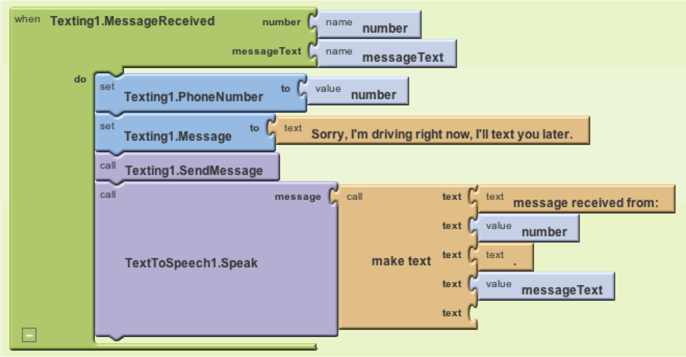

Built with the mission to democratize app creation for and by all, MIT App Inventor is a graphical tool that turns media consumers into active and critical participants of the mobile world.
As portable devices become ubiquitous, mobile apps are the new Web. Literally bringing data and connectivity to our fingertips, apps are increasingly becoming our primary entryway to local news, weather and market reports, email, digital books, movies, interactive games and socially-relevant information.
But like in the early days of the Web, when site creation required highly specialized skills, app creation is still the domain of a small elite of programmers and designers. This is where MIT App Inventor comes into play.
By combining visual LEGO-like blocks together on the screen, App Inventor users, even those with no programming experience, can create apps for health, entertainment, education, business and anything else that comes to mind.

Programming with App Inventor is like combining LEGO blocks on the screen
App Inventor is currently being taught by universities, schools and community technology centers around the world. As part of those initiatives, students not only acquire important technology skills such as computer programming, but also have the opportunity to apply computational thinking concepts to science and other meaningful contexts. Examples of student projects include a mobile app to educate women about the Pap test, systems to support grassroots organizations in Haiti, and games to foster healthy lifestyles. Outside the formal academic realm, App Inventor is being used in youth programs to engage underserved girls with careers in science and technology, in massive open online courses to foster mobile workforce development and entrepreneurship throughout Latin America, and in many other initiatives.
High school girls creating an app as part of the Technovation Challenge
The brainchild of MIT Professor Hal Abelson, App Inventor started as a collaboration with Google in 2009. In late 2011, the project came to the MIT Center for Mobile Learning and was released as free and open source a few months later. Currently, App Inventor has over 900,000 users and has spawned nearly two million projects.
Although those numbers are already impressive, the MIT Center for Mobile Learning is now working to reach out to a much larger fraction of the 5 Billion mobile phone users of the planet. In order to do so, the next version of App Inventor is going to bring a more intuitive interface and will be available in multiple languages besides English.
Still, much more will be needed to turn App Inventor's democratizing potential into reality. The example apps listed above are a good starting point, but they are still a minority. From a technology perspective, if the plan is to support the creation of personally and socially meaningful apps for and by everyone, we will have to make sure that App Inventor provides the core building blocks for the most desired projects and is friendly enough for people to feel comfortable using those blocks.
However, even with usability improvements, the process of creating apps is not a trivial one. It requires individuals to conceptualize their new app, put together a simple prototype, test it out and repeat the process until they are happy with the outcome. Part of that can be done in isolation, but it is most likely to happen when inventors-to-be are provided with the proper space, orientation and nurturing environment of a local group.
In a way, none of those technical and non-technical tasks can or should be done by MIT alone. In order to be successful, they will depend on strong collaborations among technical education institutions and field organizations that assume true ownership over App Inventor, make sure it enables relevant projects in their region, and support their long term sustainability. A few of these collaborations are already happening, but we need more.
This blog entry is an invitation to all who are interested in democratizing the apps creation world. If you are an educator, check the App Inventor tutorials and resources on the website. If you are a software developer, join the App Inventor Open Source group. If you have specific questions or are already doing related work in the field, just send us an email!
Note: this entry is a cross-post from the mEducation Alliance blog: http://www.meducationalliance.org/blog/democratizing-mobile-world-mit-ap...